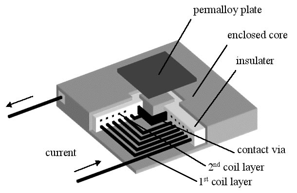
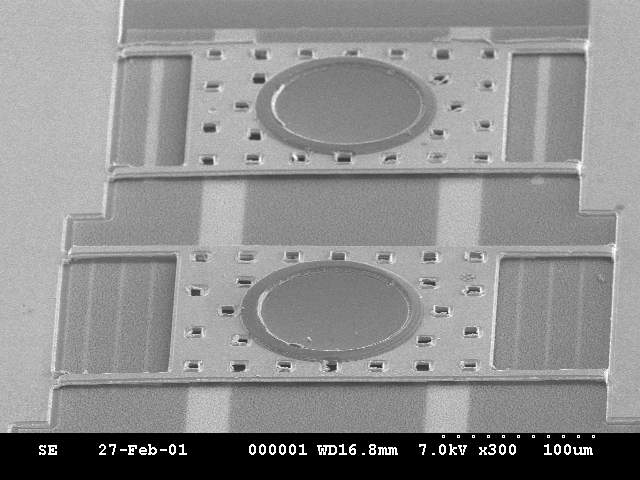
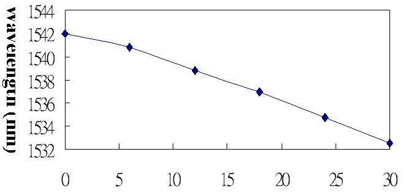
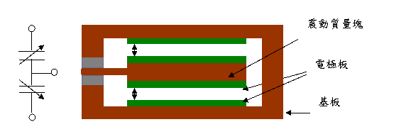
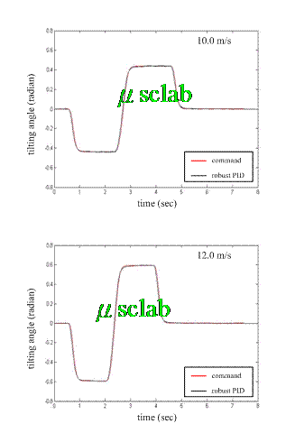
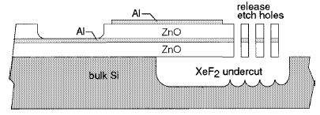

| |
| 創新式微光學開關 |
由光塞取多工器 (Optical Add/Drop Multiplexer，OADM)系統架構圖(圖2)，我們知道，為了適當阻絕光訊號或讓特定光訊號通過，微光學開關的設計十分重要，理想來說，擁有切換45度與0度動作的微鏡面將使得OADM在整體光路設計與系統封裝上具有相當的優勢，如何針對此要求開發微光學開關將是OADM設計主要的重點。在此研究，我們整合了表面微系統加工、微機械止動結構(Mechanical Stopper)與先進覆晶封裝(flip-chip packaging)技術來設計製作可應用於OADM的光切換元件(圖3左)。此成果已發表在2003年8月之IEEE Transaction on Advanced Packaging。而有鑒於光開關之研究大多仍以數位方式驅動，光通訊於高埠數、高容量之需求日增，原數位方式將無法滿足要求，因此本研究亦著重於類比驅動方式，並結合光柵元件之分光能力，朝向所謂的波長選擇式光開關系統發展(圖3右)。
- Y. C. Lin, J. C. Chiou, W. T. Lin, Y. J. Lin, and S. D. Wu, “The Design and Assembly of Surface-Micromachined Optical Switch for Optical Add/Drop Multiplexer Application”, IEEE Transactions on Advanced Packaging, Vol. 26, No. 3, Aug. 2003, pp. 261-267.
- Y. C. Lin, J. C. Chiou, and C. L. Chen, “A Digital/Analog Actuating Mechanism for Optical Applications”, International Journal of Computational Engineering Science, Vol. 4, No. 3, Sep. 2003, pp. 435-438.
- J. C. Chiou and Y. J. Lin, “A new modeling method of vertical electrostatic comb drives”, International Journal of Computational Engineering Science, Vol. 4, No. 3, Sep. 2003, pp. 641-644.
圖2光塞取多工器系統架構圖
|
| (3) 高效率電磁式制動器 |
利用電磁原理產生運動，在微機電領域已經成為一個重要的研究主題，而高效率電磁式制動器可在遠距離產生大的驅動力，因而達到大行程與大角度的運動，且其具有驅動電壓低及操作頻率高的優點。然而，在設計磁式微致動器時，若缺乏良好的封閉磁路設計，會因磁漏導致操作效率大大地降低，本研究除了研製一具有封閉磁路的新型平面新微致動器外(圖4)，並提出微致動器的最佳化設計方法，亦即使用基因演算法結合有限元素法，應用有元素法提供準確的磁力計算，經由一系列的模擬以識別出對最佳化具關鍵影響的幾何參數，以一改良的基因演算法對幾何參數做最佳化的搜尋，並探討基因演算法的搜尋效率，最後將觀察其他幾何參數及材料對最佳化參數的影響。此成果已發表在2002年之Journal of Microlith., Microfab.,Microsyst.及2003年之Journal of Magnetism and Magnetic Materials。
- C. H. Ko and J. C. Chiou, “Fuzzy Macromodel for Dynamic Simulation of Microelectromechanical Systems,” IEEE ICNSC 2004, Taipei, Taiwan, March 21-23, 2004.
- C. H. Ko and J. C. Chiou, “Optimal Design of the Magnetic Microactuator Using the Genetic Algorithm” Journal of Magnetism and Magnetic Materials, 263, 2003, pp 38-46.
- C. H. Ko, J. J. Yang, and J. C. Chiou, “Efficient magnetic microactuator with an enclosed magnetic core,” Journal of Microlith., Microfab., Microsyst., Vol. 1, No. 2, 2002, pp. 144-149.
|
|  |
| 圖4高效率電磁式制動器(左:示意圖; 右:線圈實體) |
| (4) 低溫Fabry-Perot濾波器製程設計 |
微型Fabry-Perot 濾波器結構主要以矽為基材，及由兩個具有高反射係數的平行鏡面、平行的驅動電極與支撐樑所形所構成的一個微小間距，如圖4左所示。其原理類似雷射共振腔，光在行經兩個高反射平行鏡面形成的間距時，當間距等於入射光的半個波長整數倍時，在輸出端會產生建設性干涉，產生陡峭的光波脈衝(peak) (圖5右)。因此，只要利用驅動電極來控制間距的大小，便可以得到不同波長的光源。利用一般半導體製程所製造的微機械結構容易產生殘餘應力，導致微機械結構產生形變，因而影響光源經過非平行之鏡面時，由於光波行程的差異，容易產生光源干涉的現象而影響光源的精確性。本研究利用一低溫半導體製程，所製作之新元件可大幅改善前述元件缺點，此成果已發表在2002年九月之Optic Communications。
- W. T. Lin, J. C. Chiou, and B. C. S. Chou “A photonic device compatible process in fabricating tunable Fabry-Perot filter,” Optics Communications, 210, 2002, pp. 149-154.
|
|  |
 |
| 圖5低溫製程Fabry-Perot濾波器(左: 製作實體; 右:電壓 .vs 濾出波長) |
隨著科技進步，資訊大量流通，行動電子商務儼然成為一股洪流，所有的資訊商品皆必須具有無線化的特性才能在市場上佔有一席地位。其中電池續航力的長短主導了產品的操作時間，如何延長商品的操作時間則是各家廠商的一大難題。可想而知的解決的方法有兩種。1.開源：設計更有效率的電源，或是容量更大的電池；2.節流：有效的電源管理或是更省電的電路設計。過去幾年已有多種的微感測器商品化，並且大量應用於汽車或是資訊商品上，如加速度計應用於安全氣囊、壓力感測器應用於引擎控制或是胎壓的量測。但是我們可以發現到，相關商品因為使用微機電技術製作所以可以輕易達到輕、薄、短、小的尺寸特性，但是對於功率的消耗部分，由於其載體本身所消耗的能量遠大於微感測器部分，所以在微感測器的設計上，減少功率的消耗並未受到重視。相較於總計畫所提出的無線感測模組，微感測器所佔有的功率消耗已經不是過去的微不足道，反而會是主要的耗能元件，因此在此類應用面下，設計與製作一低耗能的智慧型感測元件實為微機電領域人才必須儘速投入的研究主題。
在總計畫中，即是針對開源與節流二特性，除了規劃有開源的震動-能量轉換模組，在節流部分更要求所有的耗能元件必須達到低耗能的規範，本子計劃的目的便是針對總計劃的需求，設計與製作『智慧型微感測元件』。在此提出一個光電式氣體濃度監測系統或一個簡易創新型加速規，提供總計畫所需微感測器訊號源。為了低耗能的考量，在此所設計的元件將具有相當簡化的結構與電路，以滿足吾人所設計之微感測器部分耗能僅為30mW的要求。
因為本子計畫提出一個光電式氣體感測器（Optical Gas Sensor）或一個門檻式加速規(Threshold accelerometer)，提供總計畫所需微感測器訊號源。所以在此針對此二部分元件之相關研究與重要參考文獻部分提出評述。
1.微加速規：
微加速度計的發展可以算是最快商品化的微機電產品，藉由感測方式的不同大致可以區分為電容式（Capacitive）、壓電式（Piezoelectric）、壓阻式（Piezoresistive）、熱式（Thermal）等種類。電容式的微加速規依照其作動方式可分成非差動型及差動型兩種，非差動式的電容式加速規可以看成是一個電容，如圖6所示，利用兩片平行的電極板，分別至於震動質量塊下方以及基板上方，當加速度產生時會造成兩平行電極板之間的間距d瞬間產生改變為d+Δd時，假設兩平行電容板之間相互重疊的面積，電容之電容率為ε，k為介電常數藉由電容值的改變達到偵測加速度的目的，但是此種作動方式的電容感測器雖然製程容易，但卻容易至到外界環境因素的影響，如溫度濕度等等因素會影響到介電值的改變引起的的偵測的精確度。
差動式的微電容加速計改善了差動式受環境因素影響的的缺點，此種加速度計時有兩組電容所組成，而且這兩組電容變化量互為互補。也就是變化量的絕對值相等，但是電容值卻是一個增加一個減少。如圖7所示。一般常見的運用則在質量塊的四周利用梳狀的結構形成差動電容的裝置如圖8所示，圖9所示為利用差動式電容原理所設計之微加速規範例ADXL105MEMS。 |
|  |
|  |
| 圖7 差動型電容式微加速度計 |
| 壓電式加速度計由一壓電材料附在震動質量塊上，當有加速度會造成震動質量塊產生一個力作用在壓電材料上，產生一電子信號，藉由此訊號得到加速度值，如圖10所示。壓阻式加速度計同樣也是一質量塊，在受加速度外力時應變較大的地方佈上壓阻，然後藉由惠斯頓電橋(Wheaston Bridge)將微小的電阻的變化轉成電壓進而知道加速度的影響，圖11以及圖12中分別顯示了兩種壓阻式的加速計。熱型加速度計是利用加速度造成間距變化，在熱板上的溫度及其上的熱電堆輸出電壓直改變，量得加速度如圖13。而電容式微加速度計則是本論文的重點，它是以加速度造成質量塊的移動，造成電容值的變化來用以感測。 |
|  |
 |
| 圖12 Endevco 壓阻式微加速度計 |
圖13 熱式微加速度計 |
| 2.氣體偵測器： |
氣體偵測器一般常用在半導體製程中對於有毒氣體的預防偵檢，以微機電技術實現的氣體偵測器其實非常的多元，舉凡利用化學反應、光學原理、電熱感應等等。圖9是一個利用表面微加工技術所發展的氣體偵檢器，它是應用電熱與電阻值改變原理所製造的偵檢器（MHP），其原理是利用二氧化矽加熱到作動溫度(~300℃）時，因偵測氣體與感測材料反應，致使電阻產生變化，而使電極偵測得知氣體成分為何。
第二種常見的氣體偵檢器是利用光學原理設計而成的。圖14中為利用Fabry-Perot filter所設計的gas sensor，根據NDIR（non-dispersive infrared）的原理設計而成，由於二氧化碳以及水份對於紅外線輻射的吸收在特定的波長，因此氣體濃度的檢測可以藉由IR的吸收率來判定，在圖15的偵檢器中，配備了一個紅外光的發射源，圖示中Fabry-Perot filter是用來篩檢特定波長的光線進入IR dector中進行偵檢
另外，利用微機電製程製作的表面聲波偵測器（SAW,surface acoustic wave sensor）也常常用來當成氣體偵檢器，圖16為SAW之作動原理，其作法是在SAW的兩端薄膜上製作IDT電極，作為電能跟聲波之間的能量轉換媒介，當IDT電極施以交流訊號時兩電極之間會產生交變電場，進而使得壓電薄膜因為逆壓電效應產生表面聲波，經由輸出端壓電薄膜傳遞聲波到另一端的IDT電極時，正壓電效應將聲波轉換成電信號輸出，藉以量測。當我們在壓電薄膜上鍍上會吸附氣體的化學材質時，藉由吸附氣體後造成薄膜質量的改變形成輸出信號的改變，藉以感測。圖17為利用MEMS製程製作之CMOS SAW gas sensor上視圖以及製程。
為了整合結構與電路成為單一晶片便於應用，CMOS-MEMS的技術開始發展，其特點就是整合CMOS製程技術能夠同時完成MEMS結構以及驅動電路，進而整合成為單一晶片。圖18（a）所示為一個利用CMOS-MEMS為製程所製作之micro-spaeker元件其製程方式如18（b）所示，其作法為先利用CMOS製程將驅動電路部分完成，輔以一層protective glass(silicon dioxide)保護之後再利用非等向性蝕刻吃出網狀結構。利用CMOS-MEMS的技術製作元件在結構的設計上有兩種方式，一種為配合CMOS製程技術結構與電路一起設計，這種方式在結構上有一定的製程限制另一種方是就是如同microspeaker一般利用保護層將結構的製作與電路設計分別開來。
更進一步的整合型微感測型晶片可以在optical MEM的發展上找到。U. C. Berkeley 發展的SMART DUST元件可以當成智慧型整合微感測器之代表，SMART DUST整個系統架構如圖19與20所示，元件中整合了包含了Active transmitter、Passive transmitter、sensor、analog I/O，DSP，controller、power capacitor、Solar cell 、Thick film battery、以及photodector等元件。整合了compution、communication以及sensors等功能甚至連poewr的來源以及電池的裝置都結合在單一系統上，由於並不是採用CMOS-MEMS的製程技術，利用覆晶封裝的技術整合元件將使得元件的結構更加不受限制，功能性也更多元。
|
|